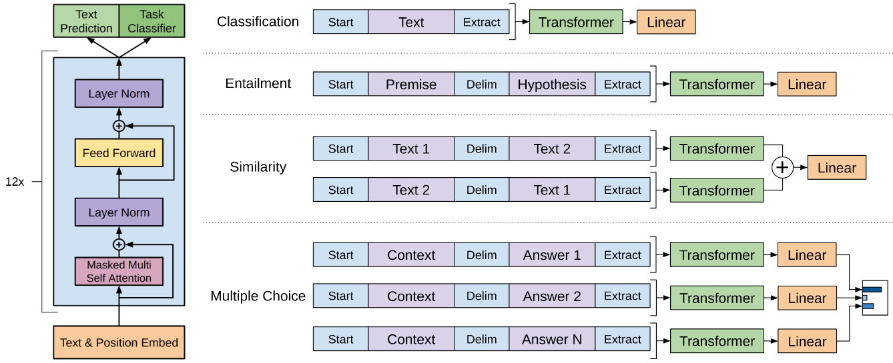
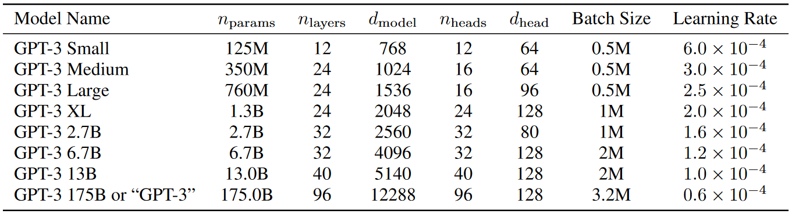
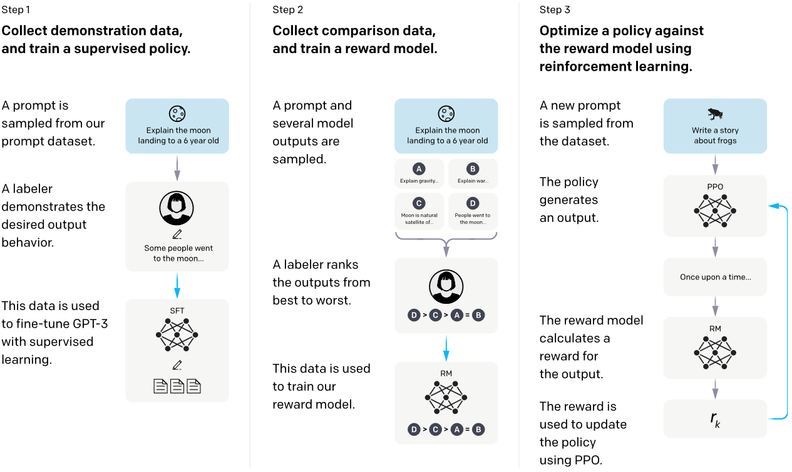
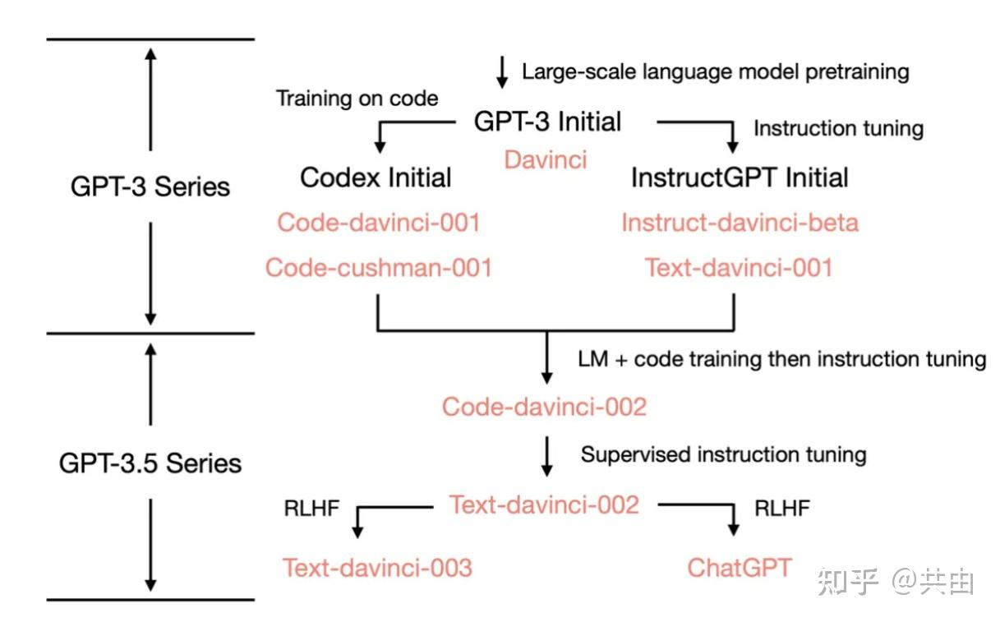

GPT-1
Improving Language Understanding by Generative Pre-Training (2018)
论文：https://cdn.openai.com/research-covers/language-unsupervised/language_understanding_paper.pdf
自然语言理解涉及多种任务，包括文本蕴含、问答、语义相似度评估、文档分类等。尽管有大量无标注语料库可用，但缺少针对这些具体任务的标注数据，导致仅使用监督学习训练的模型难以取得良好效果。
但数据标注的成本是十分昂贵的，如果一定要依赖监督数据进行训练，那么模型很难快速地迭代。而现实世界中如此丰富的语料库，只能看不能用，也不是办法。因此，改变训练方式，充分利用无标注数据来学习语言信息，是一种高性价比的替代方案。
但确定好了用无监督学习的方法，还需要考虑两个问题：
(1) 目标函数的不确定性：不同方法在不同任务上的表现存在差异，尚未有统一的最优目标。例如对于机器翻译任务，模型需要学习不同语言间的对齐信息，从而从中获取泛化的语言表示；而对于文本生成任务，模型的目标则是预测下一个单词(或被Mask的单词)。
(2) 迁移学习方法的不确定性：将预训练语言模型迁移到下游任务的方法不统一，已有方法在迁移学习时，通常需要修改模型架构、使用复杂的学习策略或增加辅助学习目标。
作者提出的方案是，先在大规模的无标注数据上进行预训练，使模型学习通用的表示，此时获得的是一个任务无关的通用模型；然后在目标任务上使用带标注的数据进行微调，使模型可以适配各种目标任务。
Model Architecture
GPT-1的结构主要基于Transformer的decoder部分。经典的Transformer decoder包含Masked Multi-Head Attention，Encoder-Decoder Attention和Feed Forward三个子层。由于不需要encoder，因此只保留Masked Multi-Head Attention, 和Feed Forward两个子层 (每个子层后面都有残差连接和LayerNorm)。
为什么选择用Transformer： Transformer允许模型在大规模文本上进行无监督语言建模，且适用于文本生成、分类、翻译、摘要、问答等多种任务。此外，与RNN、CNN等模型相比，Transformer有更强的对长距离依赖的捕捉能力。
为什么用decoder-only架构： GPT-1的任务是语言建模，不需要编码完整的输入句子，只需要逐步预测下一个词，这符合Transformer decoder的特点。
Unsupervised pre-training
$$ L_1(U) = \sum_{i} logP(u_i|u_{i-k},...,u_{i-1};\Theta) $$其中，$k$是上下文窗口的大小，即在预测当前token时，模型可以看到前k个token作为上下文信息，$\Theta$是模型的参数(GPT-1的神经网络权重)。使用随机梯度下降法进行训练。
$$ h_0 = UW_e + W_p $$$$ h_l = transformer(h_{l-1}) $$$$ P(u) = softmax(h_nW_e^T) $$其中，$W_e$表示词嵌入矩阵；$W_p$表示位置嵌入矩阵；$W_e^T$表示线性映射层对应的参数矩阵，维度是词表的大小。
Supervised fine-tuning
得到无监督预训练模型后，为了使参数适应监督目标任务，可以使用监督数据对模型进行微调。
$$ P(y|x_1, ..., x_m) = softmax(h_m^lW_y) $$$$ L_2(C) = \sum_{(x,y)}logP(y|x_1, ..., x_m) $$$$ L_3(C) = L_2(C) + \lambda·L_1(C) $$其中，$\lambda$是一个超参数，用于平衡这两个目标的影响。
在微调阶段，除了原本的预训练参数外，仅需要额外优化线性输出层的参数$W_y$和分隔符token的嵌入矩阵。
Task-specific input transformations
对于一些任务，如文本分类，因为它们的输入结构较为简单，可以直接对模型进行微调。而对于问答或文本蕴含等任务，它们的输入包含结构化信息，例如问答任务的输入可能包含文本、问题和多个可能的答案，文本蕴含任务的输入包含前提和假设两个句子。由于预训练模型是在连续文本序列上训练的，因此需要对这些任务的输入做一定的调整，才能使模型适应这些结构化的输入。
作者采用遍历式的输入转换，将结构化的输入转换为有序序列，使其适应预训练模型的输入方式，从而避免对模型架构做大量的任务特定修改。
对于不同任务，输入的转换方式如下：
- 文本蕴涵：将前提(premise)和假设(hypothesis)通过分隔符(Delimiter)隔开，两端加起始和中止token，再以此通过Transformer和全连接得到预测结果。
- 文本相似：对于需要比较两个句子的任务(如文本相似度任务)，不需要关心两个句子的顺序。为了处理这种情况，将两种可能的句子顺序都转换成输入序列，并在其中加入分隔符，然后分别处理这两个序列，最终将得到的表示通过元素相加的方式合并，再输入一个线性层。
- 问答与常识推理：对于这些任务，输入包含文档$z$、问题$q$和可能的答案集${a_k}$。将$z+q$与每个$a$连接，并在每部分之间插入分隔符。然后分别处理每个序列，并通过softmax层得到每个答案的概率分布。
GPT-1的优势在于运用了大量的无监督数据，并且在网络结构方面，无论输入、输出形式如何，中间的Transformer网络架构都不会改变。
GPT-2
Language Models are Unsupervised Multitask Learners (2019)
论文：https://cdn.openai.com/better-language-models/language_models_are_unsupervised_multitask_learners.pdf
在GPT-1中，已经证明了无监督预训练+监督微调的有效性，但仍然存在一些问题：一方面，GPT-1仍然需要任务特定的数据集进行微调，在零样本(zero-shot)学习能力上仍然有限；另一方面，GPT-1仅使用117M参数，无法充分利用大规模数据进行更深入的学习。
为此，GPT-2进行了更大规模的训练，尝试提升语言模型在从未见过的任务(zero-shot learning)中的性能表现。

Training Dataset
过去的语言模型通常是在单一领域的文本上进行训练，虽然这些数据集质量较高，但数据的多样性较低，无法让模型学到广泛的语言任务。GPT-2希望训练数据集尽可能大、涵盖尽可能多的领域和场景，以便让模型学习到广泛的自然语言任务。因此，研究人员创建了WebText：
- 数据来源：Reddit社交平台上的外部链接，该链接至少获得3Karma(点赞)，表面该链接可能包含有趣、教育性或高质量的内容。
- 数据清理：使用Dragnet和Newspaper解析HTML页面并提取正文内容。然后进行去重和启发式清理，最后得到800万个文档、共计40GB文本。
- 去除了维基百科(Wikipedia)，因为它已经被广泛用于其他数据集，可能会导致测试数据与训练数据重叠，影响评估结果的可靠性。
Model Architecture
GPT-2在GPT-1的基础上进行了一些改进：
- Layer Normalization：归一化层(LayerNorm)移至每个子块的输入端，类似Pre-activation ResNet，并在自注意力块后额外增加了一层归一化。
- 参数初始化：采用改进的初始化方法，考虑残差路径随深度增加的累积效应。因此残差层的权重在初始化时按$\frac{1}{\sqrt N}$(N为残差层数)的因子进行缩放，以稳定训练。
- 词汇表扩展：词汇量从GPT-1的40,000扩展到50,257，以提高对更广泛文本的覆盖能力。
- 上下文窗口扩展：上下文长度从512 tokens增加到1024 tokens，增强对长文本的建模能力。
- batch size增大：batch Size增加到512。
Unsupervised pre-training
$$ p(x) = \prod_{i=1}^{n} p(s_n \mid s_1, \dots, s_{n-1}) $$$$ p(output|input) $$$$ p(output|input, task) $$而任务的条件化通常有两种方式：
- 架构层面：例如针对不同任务涉及专门的子网络或特定的参数分支。
- 算法层面：例如MAML，它使用内外循环优化，使模型能够快速适应新任务。内循环指在当前任务上进行快速微调，外循环指优化整个模型，使其在遇到新任务时能快速适应。
但McCann等人发现，语言本身可以作为一种灵活的、接近自然语言方式来指定任务、输入和输出，例如：
- 机器翻译任务可以表示为：(translate to French, English text, French text)
- 阅读理解任务可以表示为：(answer the question, document, question, answer)
由于语言建模的目标是预测下一个单词，它本质上可以学习上述任务，而不需要显式标注输出，而互联网本身又包含大量的适合无监督学习的静态文本数据。因此有了以下假设：如果语言模型足够大，它将自动学习如何执行任务，以便更好地预测文本中的下一个单词。换言之，语言模型可能已经在无监督环境中执行了多任务学习。
GPT-2验证了通过大规模数据训练的模型具有zero-shot能力，而无需额外的微调。并且随着模型参数量的增大，还有进一步提升的空间。
GPT-3
Language Models are Few-Shot Learners (2020)
论文：https://arxiv.org/abs/2005.14165
GPT-2的虽然有zero-shot learning的能力，但是效果并不好，往往还是需要标签数据进行微调以在某个任务上获得更好的结果。
在此基础上，GPT-3希望通过扩大模型规模，进一步减少模型对任务特定微调的依赖。GPT-3可以通过在推理时提供少量示例或指令来适应新任务(few-shot learning)。或者说它可以在没有梯度更新的情况下，通过上下文学习(in-context learning)来执行各种任务。
Zero-shot Learning (零样本学习)
Zero-shot learning指的是模型在没有见过特定任务的任何训练数据或示例的情况下，通过仅仅依赖任务描述或自然语言指令来执行任务。
Few-shot Learning (少样本学习)
Few-shot learning指的是模型在仅有少量示例作为输入的情况下进行任务学习，并生成合适的输出。
In-context Learning (上下文学习)
In-context learning是指模型在推理过程中，通过上下文中的示例来“学习”任务，而不需要传统的微调。它与few-shot learning类似，但着重强调的是任务在输入文本中的上下文信息。
Training Dataset
为了训练GPT-3，对数据集进行了以下处理：
- 通过与高质量参考语料库的相似性对Common Crawl数据集进行过滤，确保数据质量。
- 在文档层面去重，确保训练数据不会出现重复内容，同时保持验证集的完整性，以防止过拟合。
- 加入了扩展版的WebText、Books1和Books2语料库，及英文维基百科。
Model Architecture
GPT-3的架构与GPT-2类似，但进行了一些改进：
- 词嵌入的大小从GPT-2的1600增加到GPT-3的12888。
- 上下文窗口从GPT-2的1024增加到GPT-3的2048。
- 与GPT-2不同，GPT-3引入了交替的稠密(dense)和局部带状稀疏(locally banded sparse)注意力模式，以减少计算复杂度，同时保留模型的表现。
稠密注意力模式 (Dense Attention)
稠密注意力模式是指每个输入位置都与所有其他位置进行相互注意。它允许每个位置关注整个输入序列，因此模型可以捕捉全局信息，非常适合需要全面上下文信息的任务。但随着输入序列长度的增加，计算量呈二次方增长，复杂度高。
局部带状稀疏注意力模式 (Local Banded Sparse Attention)
在稀疏注意力中，每个token只会与其邻近的token进行注意力计算，而不是与所有token计算。它专注于局部信息，计算量大大降低。
交替模式 (Alternating Attention Pattern)
交替模式是指在Transformer层中，某些层使用稠密注意力模式，而其他层使用局部带状稀疏注意力模式。通过这种方式，可以有效地结合全局和局部信息，并同时减少计算开销。
为了研究模型规模对机器学习表现的影响，作者训练了8个不同规模的模型，模型的规模从1.25亿参数到1750亿参数不等，其中最大规模的模型即为GPT-3，不同大小的模型参数如图所示：
GPT-3在Zero-shot、Few-shot和One-shot上表现优异，尤其是在Few-shot场景下。且GPT-3展示了其非常强的泛化能力，能够通过少量示例来适应新任务，显著降低了对任务特定数据的依赖。此外，GPT-3能够仅通过自然语言的任务描述来理解和执行任务，进一步减少了手动工程设计和复杂输入的需求。
InstructGPT
Training language models to follow instructions with human feedback (2022)
论文：https://arxiv.org/abs/2203.02155
GPT-3在生成文本时，可能会做出不符合用户期望的行为，例如编造事实、生成有偏见或有毒的文本，或者根本不遵循用户指令。这是因为模型的训练目标是预测下一个词，而不是“帮助用户完成任务”和“安全地遵循用户的指令”。
为了解决这个问题，OpenAI提出了InstructGPT，它通过人类反馈和强化学习调整了模型的行为，使其更好地遵循指令和符合用户意图，变得有帮助(helpful)、诚实(honest)和无害(harmless)。
High-level methodology
InstructGPT参考了Ziegler et al.(2019)和 Stiennon et al.(2020)的工作。通过使用人类反馈强化学习(RLHF)，使模型的输出更加符合用户的意图。该方法首先选择一个预训练的语言模型(如GPT-3)，并确定一个包含各种输入提示的分布。然后，组一个经过训练的标注员团队，他们需要提供所需的行为示范和反馈。方法按以下步骤执行：
- 收集示范数据并进行监督学习：通过标注员在指定的输入提示分布上提供“行为示范”。这些示范说明了标注员希望模型生成的行为或输出。然后，使用这些示范数据对预训练的GPT-3模型进行监督学习，使其能够根据这些示范数据生成期望的输出。
- 收集比较数据并训练奖励模型：标注员将比较多个模型生成的不同输出，标记出哪个输出更符合他们的偏好。基于这些比较数据，训练一个奖励模型(RM)。这个模型的任务是预测哪一个模型输出更符合人类标注员的偏好。
- PPO优化策略：RM的输出是一个标量值(奖励)，这个奖励反映了模型输出与标注员偏好的匹配程度。使用PPO算法对监督策略进行强化学习，目的是优化模型的输出，使得输出的奖励尽可能高(即更符合人类偏好)。
步骤2和3可以迭代执行，随着强化学习过程的进行，不断收集新的比较数据，用这些数据训练新的奖励模型，再用这些新的奖励模型对模型进行进一步的优化。
Dataset
根据上述的方法过程，可以看到总共需要三种类型的数据集：
- SFT数据集：包括标注员提供的示范数据，用于训练监督学习模型(SFT)。
- RM数据集：包括标签员对模型输出的排名数据(比较两个模型的输出，标记哪个输出更符合人类偏好)，用于训练奖励模型(RM)。
- PPO数据集：不含人类标签数据，用于强化学习(RLHF)微调。
其中，SFT数据集有约13k条提示，RM数据集有33k条提示，PPO数据集有31k条提示。数据集的提示类型涉及生成、问答、对话、摘要、抽取等多种自然语言任务。
Models
包括三种主要的训练技术：监督微调(SFT)、奖励模型(RM)和强化学习(RL)。
监督微调 (SFT)
SFT阶段，使用标注员提供的示范数据对GPT-3进行监督学习微调。基于奖励模型(RM)在验证集上的表现选择最好的SFT模型。
Reward modeling (RM)
RM基于SFT模型进行，去除了最终的解嵌层(用于将词嵌入转换回模型的输出空间)后进行训练。该模型接受一个提(prompt)和一个响应(response)，并输出一个标量奖励值，该值表示给定响应的质量。
这里仅使用了6B参数的奖励模型，因为175B奖励模型训练时需要的计算资源非常高且不稳定，因此不适合作为强化学习(RL)中的价值函数。
$$ \text{loss}(\theta) = - \frac{1}{\binom{K}{2}} \mathbb{E}_{(x, y_w, y_l) \sim D} \left[ \log \left( \sigma \left( r_\theta(x, y_w) - r_\theta(x, y_l) \right) \right) \right] $$其中，$r_\theta(x, y)$是奖励模型对提示$x$和响应$y$的标量输出；$y_w$是比较中更好的响应，$y_l$是另一个相应；$D$是包含人类比较数据的数据集；$\sigma$是Sigmoid函数，用于将差值转换为概率。
为了加速数据收集，标签员每次会看到4~9个响应来进行排名，这样每个提示就会有多个候选响应。对于每个提示，标注员会 从$K$个响应中选择两个进行比较，如果$k=4$，就会有$4×(4-1)/2=6$个比较。
由于每个任务中的比较数据是高度相关的，研究发现如果直接将所有比较混合到一个数据集中，经过一次训练会导致奖励模型过拟合。因此，将每个提示的所有比较作为一个批次进行训练。
Reinforcement learning (RL)
使用PPO算法对SFT模型进行强化学习环境中的微调。使用的环境是一个bandit环境，该环境会随机提供一个客户输入的prompt，并期望模型生成相应的回答。收到prompt并生成回答后，使用RM对生成的回答进行评估，并提供奖励。为了避免奖励模型过度优化并保持原始模型的完整性，在每个token添加KL惩罚。
$$ \text{objective}(\varphi) = \mathbb{E}_{(x,y) \sim D_{\pi_{\text{RL}}}} \left[ r_{\theta}(x, y) - \beta \log \left( \frac{\pi_{\text{RL}}(y | x)}{\pi_{\text{SFT}}(y | x)} \right) \right] + \gamma \mathbb{E}_{x \sim D_{\text{pretrain}}} \left[ \log \left( \pi_{\text{RL}}(x) \right) \right] $$强化学习训练的目标函数旨在平衡：
- 最大化奖励模型预测的奖励$(r_{\theta}(x, y))$;
- 最小化强化学习策略与监督训练策略之间的差异$(\beta \log \left( \frac{\pi_{\text{RL}}(y | x)}{\pi_{\text{SFT}}(y | x)} \right))$，其中$\beta$为KL惩罚系数；
- 通过预训练损失项保持预训练数据的分布。
InstructGPT证明了通过细化训练，尤其是使用人类反馈强化学习，能够显著改善语言模型在多个任务上的表现，使其更加符合用户的意图。
ChatGPT
InstructGPT在训练时以对齐指令为主，模型的对话能力、逻辑推理能力还需要进一步的改进，ChatGPT(2022.11)是AI对话的一个里程碑。
GPT-4
技术报告：https://arxiv.org/abs/2303.08774
相比基于GPT-3.5的ChatGPT，GPT-4(2023.3)支持多模态输入(可以理解文本、图片)，其理解能力和推理能力也进一步增强。
更多版本
GPT-4 Turbo (2023.11)
知识库更新至2023.4，上下文窗口扩大至128k，性能进一步提升。
GPT-4o (2024.05) 能够处理文本、图像、音频输入，生成速度提升2倍，成本降低50%。但逻辑推理能力相对较弱。
o1-preview
o1预览版本，针对复杂推理任务进行优化。
o1-mini
轻量版的o1，成本更低、响应更快。
GPT-o1 逻辑推理能力强，特别是数学和编程，仅支持文本交流。
Reference
[1] https://zhuanlan.zhihu.com/p/680022511
[2] https://blog.csdn.net/weixin_65514978/article/details/141018827?ops_request_misc=%257B%2522request%255Fid%2522%253A%2522307bae430be83adb7b0193fef212489a%2522%252C%2522scm%2522%253A%252220140713.130102334..%2522%257D&request_id=307bae430be83adb7b0193fef212489a&biz_id=0&utm_medium=distribute.pc_search_result.none-task-blog-2~all~sobaiduend~default-2-141018827-null-null.142^v102^pc_search_result_base9&utm_term=gpt%E7%B3%BB%E5%88%97%E6%A8%A1%E5%9E%8B%E6%80%BB%E7%BB%93&spm=1018.2226.3001.4187
[3] https://blog.csdn.net/tMb8Z9Vdm66wH68VX1/article/details/128928143?ops_request_misc=%257B%2522request%255Fid%2522%253A%252298ce02c531403ce60b26d74079c9b284%2522%252C%2522scm%2522%253A%252220140713.130102334..%2522%257D&request_id=98ce02c531403ce60b26d74079c9b284&biz_id=0&utm_medium=distribute.pc_search_result.none-task-blog-2~all~top_positive~default-1-128928143-null-null.142^v102^pc_search_result_base9&utm_term=InstructGPT&spm=1018.2226.3001.4187